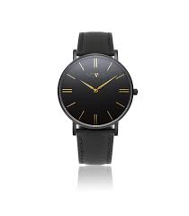

New and Improved!

Novus Watch Series IV
The pinnacle of fashion and tech. This wearable piece is an homage to gilded palaces and minimal regalia, combining nouveau-deco and brutalism influences ina compact, Swiss-made watch.